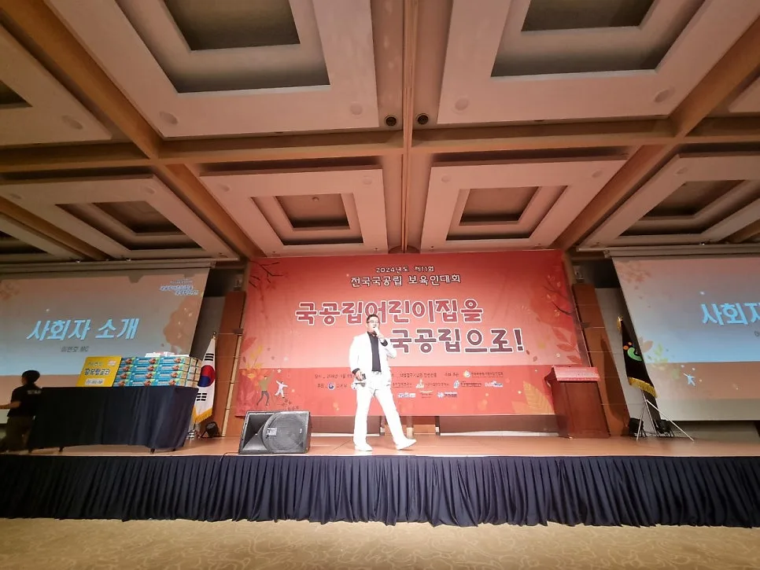

행사 준비 · 2026년 11월 13일
행사 주최·후원 표기 확인: 로고 원본과 노출 승인표
행사 주최·후원 표기 확인은 받은 로고를 한 화면에 모으는 작업이 아니라 누가 어떤 역할로 공개되는지 승인받는 과정입니다. 정식 명칭, 역할 구분, 사용 가능한 원본, 표시할 매체를 함께 묶으면 로고가 있다는 이유로 협력 관계까지 임의로 설명하는 일을 피할 수 있습니다.

- 로고 파일 수신과 주최·후원 표기 승인은 별도로 관리합니다.
- 매체별 시안을 보여 주고 승인된 노출 범위를 기록합니다.
- 수정은 원본 파일부터 실제 출력물과 진행 문구까지 대조합니다.

1. 행사 주최·후원 표기 확인은 역할 목록을 만듭니다
명함이나 이메일에서 본 기관명을 그대로 후원 목록에 넣지 않습니다. 주최, 주관, 협력, 후원 등 어떤 말로 표시할지는 주최 측이 확인한 관계를 기준으로 정합니다.
파일을 받았다는 사실은 표기 승인이 아닙니다. 담당자가 자료를 전달했다는 것과 해당 기관을 특정 역할로 공개해도 된다는 것을 분리해 기록합니다.
목록에는 공개 명칭과 확인 창구, 요청한 역할, 답변 상태를 적습니다. 답을 받지 못한 행을 보기 좋게 채우려 임의로 확정 표시하지 않습니다.
2. 로고는 사용 가능한 원본을 요청합니다
인터넷 검색으로 비슷한 그림을 찾아 쓰기보다 해당 확인 창구에 사용할 자료를 요청합니다. 같은 기관에도 여러 표식이 있을 수 있으므로 전달받은 파일의 용도를 확인합니다.
가로형과 세로형, 배경이 있는 버전 등 어떤 자료를 어느 매체에 쓸지 질문합니다. 해상도나 인쇄 적합성은 제작 담당이 검토하고 임의로 선명하다고 판단하지 않습니다.
| 검토 항목 | 받아 둘 답변 | 확인할 결과물 |
|---|---|---|
| 명칭과 역할 | 정식 명칭 및 승인 역할 | 시안의 표기 줄 |
| 원본 자료 | 사용할 파일과 관련 안내 | 디자인 적용본 |
| 노출 매체 | 무대·화면·인쇄물 등 범위 | 매체별 시안 |
| 수정 요청 | 변경할 항목과 확인 창구 | 교체 후 최종본 |
전달받은 원본은 적용본과 구분해 보관합니다. 파일명을 바꿀 때도 어떤 원본에서 나온 것인지 연결할 수 있게 하고 확인되지 않은 재가공은 제작 담당에게 질문합니다.

3. 매체마다 노출 범위를 따로 확인합니다
무대 백드롭에 들어갈 표기와 안내 화면에 들어갈 표기가 항상 같다고 가정하지 않습니다. 매체별로 들어가는 기관, 역할, 순서가 보이는 시안을 확인 창구에 전달합니다.
로고 단독 확인 대신 주변 문구까지 보여 줍니다. 어느 제목 아래 놓였는지에 따라 관계가 다르게 읽힐 수 있으므로 전체 맥락을 함께 검토합니다.
승인 순서와 크기는 합의한 내용을 기록합니다. 자체 기준을 모든 행사에 적용되는 의전 규칙처럼 소개하거나 특정 기관의 서열을 추정하지 않습니다.
대외 공개물 외에 운영본에도 같은 역할 이름을 씁니다. 내부 목록의 임시 약칭이 진행 대본으로 넘어가 후원 관계를 다르게 소개하지 않도록 합니다.
4. 답변이 없거나 내용이 다르면 확정 전에 멈춥니다
명칭은 확인됐는데 역할 답변이 없다면 해당 두 칸의 상태를 다르게 둡니다. 일부 답변을 받았다는 이유로 매체 전체를 승인 완료로 처리하지 않습니다.
관계가 불명확한 표기는 주최 측 판단으로 돌려보냅니다. 진행자나 제작자가 추측해 상위 역할로 올리거나 다른 말로 바꿔 쓰지 않습니다.
출력 일정이 임박해도 미확정 항목을 조용히 채워 넣지 않습니다. 남은 질문, 영향을 받는 결과물, 판단할 담당을 주최 측에 알려 보류나 수정 방향을 결정하도록 합니다.

사진에서는 무대와 화면의 구성만 참고합니다. 실제 주최·후원 관계나 로고 승인 상태, 제작 담당을 사진에서 추정하지 않습니다.
5. 최종 대조는 파일이 아니라 공개될 면을 봅니다
문서 목록의 기관명이 맞아도 오래된 시안에 오자가 남을 수 있습니다. 최종 출력 파일과 화면 파일, 진행 문구를 각 매체의 승인표와 나란히 대조합니다.
최종본 표시와 실제 적용 확인을 구분합니다. 담당이 승인한 파일을 저장한 뒤에는 운영 장비나 출력물에 같은 버전이 들어갔는지도 확인해야 합니다.
잘못된 표기를 발견하면 변경 항목과 교체할 매체를 특정합니다. 모든 자료를 다시 보냈다는 말만 남기지 말고 어떤 파일과 출력물이 교체됐는지 확인 상태를 남깁니다.
행사 뒤 자료를 다시 사용할 때는 승인 범위를 새로 확인합니다. 이번 공개물에 적용한 확인 결과가 다른 행사나 모든 홍보물에 그대로 이어진다고 해석하지 않습니다.
6. 상담에서는 승인과 진행 업무의 경계를 정합니다
힐링엔터테인먼트 하는 일에는 전문 MC 진행, 무대 진행 · 현장 운영, 창립 기념식 · 회원 대회가 안내되어 있습니다. 기관 관계의 승인이나 로고 제작 권한까지 회사가 대신 판단한다는 뜻은 아닙니다.
자동 견적서에서 필요한 진행 항목을 확인하고 견적 문의에 표기가 나갈 매체와 주최 측 확인 창구를 적습니다. 디자인·출력·자료 취합이 필요한 경우 각각 포함 여부를 질문합니다.
읽는 방법은 호명 발음표에서 별도로 확인합니다. 이 글은 명칭의 소리가 아니라 공개할 역할과 로고 적용 범위를 승인표로 맞추는 방법입니다.
자주 묻는 질문
기관에서 로고를 보내면 후원으로 적어도 되나요?
로고 전달만으로 관계를 확정하지 않습니다. 공개 명칭과 역할, 노출할 매체를 확인 창구와 주최 측에 확인합니다.
한 시안을 승인받으면 모든 인쇄물에 써도 되나요?
승인한 매체와 적용 범위를 확인합니다. 다른 크기나 구성이 필요한 결과물은 해당 적용본을 따로 검토하는 편이 좋습니다.
로고가 흐리면 직접 새로 그려도 되나요?
임의로 다시 만들지 않고 사용 가능한 원본을 요청합니다. 파일 적합성과 적용 방법은 자료 제공 창구 및 제작 담당과 확인합니다.
행사 날짜가 정해지셨나요?
날짜 · 지역 · 인원 · 행사 종류만 알려 주시면 행사에 맞춰 상담 · 견적을 안내드립니다. 행사 중엔 통화가 어려우니 문자 · 카톡을 남겨 주세요.